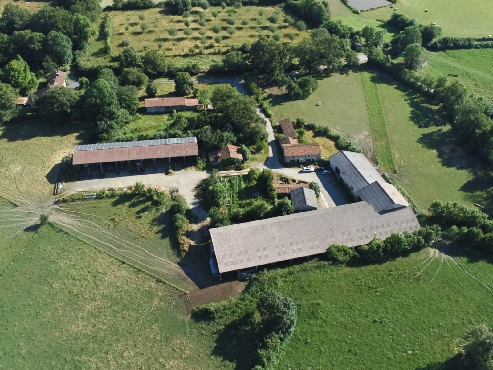
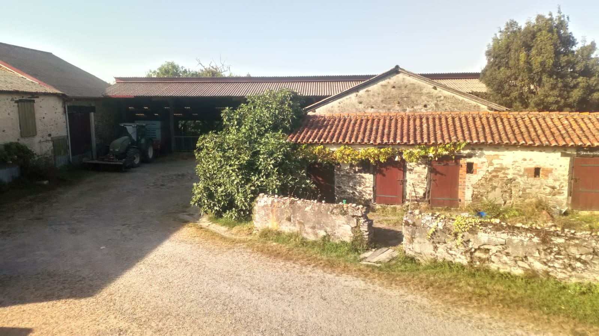
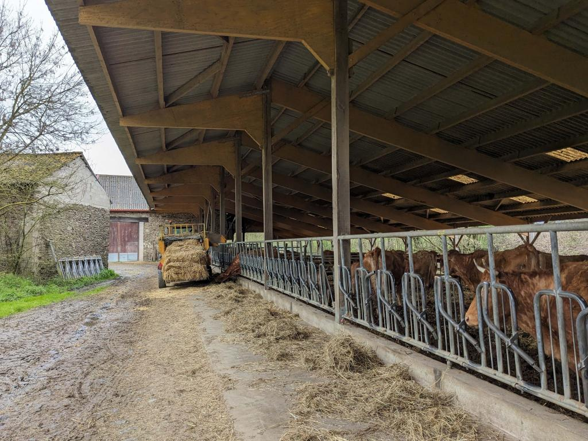
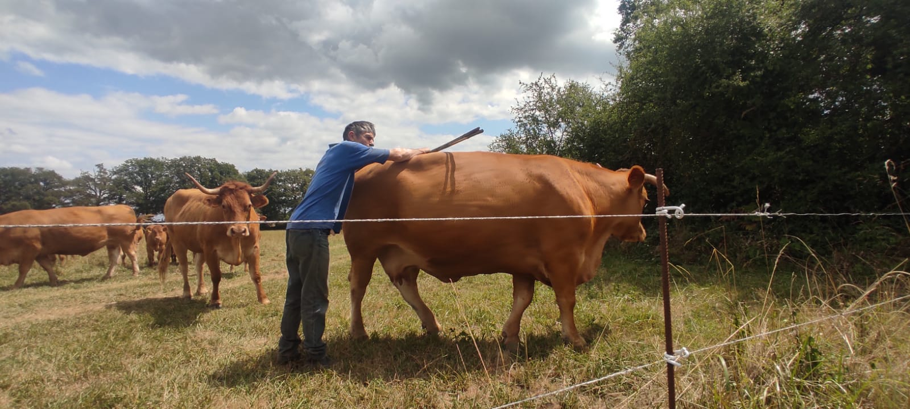
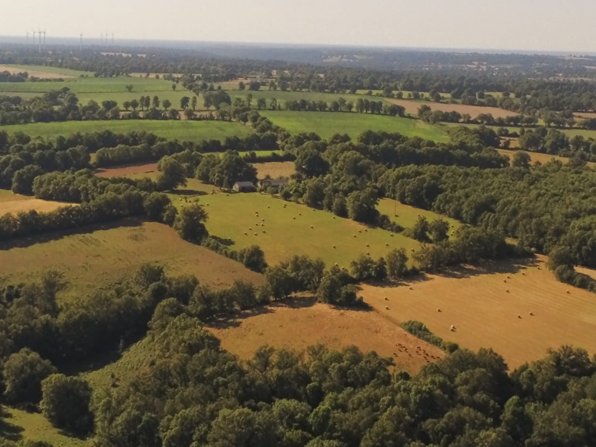
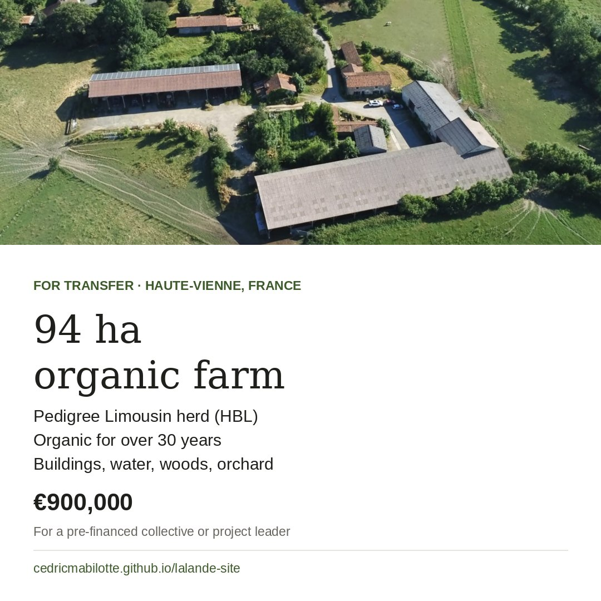
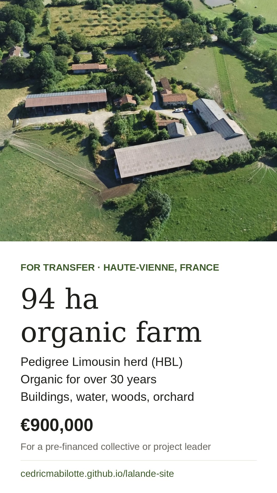
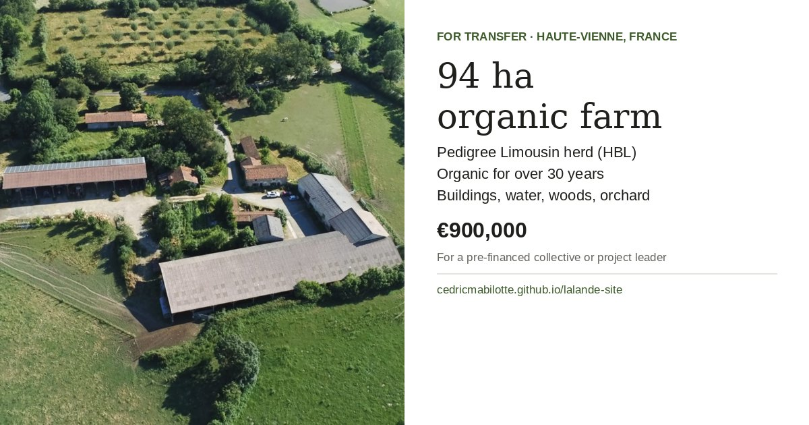

La Lande farm
Set in an unspoilt natural environment, a family farm managed with high standards and respect for living things, now available for transfer.

Ideal for
- Livestock farmers wishing to take over a well-structured organic operation and a pedigree Limousin herd
- A small group of young farmers setting up
- An eco-place project with a productive, multi-activity farming base
- A family seeking self-sufficiency and economic viability
Buildings
- A 177 m² farmhouse, energy rating C, geothermal heating
- A cattle shed (loose housing) and a large barn
- A hay shed and outbuildings: henhouses, pigsties, workshops, tractor garage
- A traditional bread oven with its bakery room


The herd
The farm is mainly based on breeding pedigree Limousin cows registered in the Limousin Herd-Book (HBL), with particular attention to animal welfare and soil balance. The herd is known for its hardiness, cohesion and calm temperament, developed over the years. It has good beef and, above all, excellent maternal qualities, making it a well-structured, transferable production asset.

Land, water, wildlife
Permanent and temporary grassland provides self-sufficiency in hay. It is bordered by ancient hedgerows, ecological corridors supporting rich biodiversity: birds, pollinators, soil life. There are also two woods of 5 hectares and a 26-year-old orchard of 70 apple trees of old local varieties. Water is available on the property (well, borehole, pond, stream), ensuring self-sufficiency.

What the place allows
- Continuing high-quality organic livestock farming
- Agroecology and rotational grazing
- Diversifying into mixed farming and agroforestry
- Processing: bread-making, participatory cooking
- Short supply chains and direct sales
- Educational visits and cultural events
- A collective experimenting with a productive eco-place founded on ecosystem preservation
Price
It includes:
- the house: €90,000
- all buildings: €150,000
- most of the farm machinery (tractors, equipment): €110,000
- the HBL-registered herd, 50 suckler cows and their calves: €220,000
- stocks: €30,000
- the land: €300,000
The price will be adjusted on the day of sale according to changes in herd numbers and stocks.
A detailed information pack is available on request: herd details, financial data, parcel maps, surveys and diagnostics.
For prospective buyers
The farm is still operating, so it can be taken over immediately. Daily work with the animals means we cannot answer every enquiry: only pre-financed projects committed to continuing organic farming will be considered. Thank you kindly for your understanding.
Contact
By phone or email, with a short presentation of your project and its financing.
06 44 87 29 37lucileloup.66@gmail.comShare this listing
Do you know a collective or a project leader who might be interested? Please pass the listing on.
Text to copy
94 ha organic farm available for transfer in Haute-Vienne, France: pedigree Limousin herd, buildings, water, woods and orchard. For pre-financed collectives or project leaders.
https://cedricmabilotte.github.io/lalande-site/en/
Ready-to-post images
Download and post them with the text above.


Instagram, Facebook


Instagram, Facebook and WhatsApp stories


Facebook, LinkedIn, X, Telegram